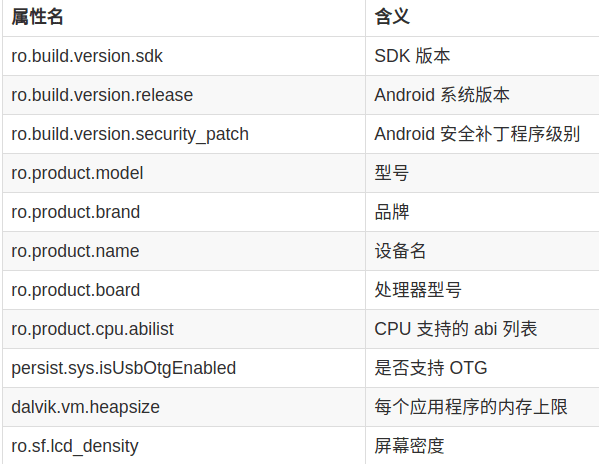
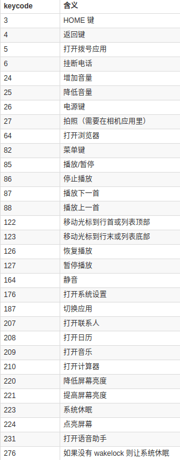

概述
ADB，即 Android Debug Bridge.
命令语法
adb 命令的基本语法如下：
1
| adb [-d|-e|-s <serialNumber>] <command>
|
如果只有一个设备/模拟器连接时，可以省略掉 [-d|-e|-s <serialNumber>] 这一部分，直接使用 adb <command>。
指定目标设备
| 参数 |
含义 |
| -d |
指定当前唯一通过 USB 连接的 Android 设备为命令目标 |
| -e |
指定当前唯一运行的模拟器为命令目标 |
| -s <serialNumber> |
指定相应 serialNumber 号的设备/模拟器为命令目标 |
在多个设备/模拟器连接的情况下较常用的是 -s <serialNumber> 参数，serialNumber 可以通过 adb devices 命令获取。
启动/停止
启动 adb server 命令：
一般无需手动执行此命令，在运行 adb 命令时若发现 adb server 没有启动会自动调起。
停止 adb server 命令：
无线连接
- 将 Android 设备与将运行 adb 的电脑连接到同一个局域网。
- 将设备与电脑通过 USB 线连接。
- 让设备在 5555 端口监听 TCP/IP 连接:
adb tcpip 5555。
- 断开 USB 连接。
- 找到设备的 IP 地址。
- 通过 IP 地址连接设备:
adb connect <device-ip-address>。
- 确认连接状态:
adb devices。
- 断开无线连接:
adb disconnect <device-ip-address>。
应用管理
查看应用列表
1
| adb shell pm list packages [-f] [-d] [-e] [-s] [-3] [-i] [-u] [--user USER_ID] [FILTER]
|
| 参数 |
显示列表 |
| 无 |
所有应用 |
| -f |
显示应用关联的 apk 文件 |
| -d |
只显示 disabled 的应用 |
| -e |
只显示 enabled 的应用 |
| -s |
只显示系统应用 |
| -3 |
只显示第三方应用 |
| -i |
显示应用的 installer |
| -u |
包含已卸载应用 |
| <FILTER> |
包名包含 <FILTER> 字符串 |
安装 APK
| 参数 |
含义 |
| -r |
允许覆盖安装。 |
| -s |
将应用安装到 sdcard。 |
| -d |
允许降级覆盖安装。 |
卸载应用
1
| adb uninstall [-k] <packagename>
|
-k 参数可选，表示卸载应用但保留数据和缓存目录。
清除应用数据与缓存
1
| adb shell pm clear <packagename>
|
这条命令的效果相当于在设置里的应用信息界面点击了「清除缓存」和「清除数据」。
与应用交互
主要是使用 am <command> 命令，常用的 command 如下：
| command |
用途 |
| start [options] <INTENT> |
启动 <INTENT> 指定的 Activity |
| startservice [options] <INTENT> |
启动 <INTENT> 指定的 Service |
| broadcast [options] <INTENT> |
发送 <INTENT> 指定的广播 |
| force-stop <packagename> |
停止 <packagename> 相关的进程 |
<INTENT> 参数很灵活，和写 Android 程序时代码里的 Intent 相对应。用于决定 intent 对象的选项如下：
| 参数 |
含义 |
| -a <ACTION> |
指定 action，比如 android.intent.action.VIEW |
| -c <CATEGORY> |
指定 category，比如 android.intent.category.APP_CONTACTS |
| -n <COMPONENT> |
指定完整 component 名，用于明确指定启动哪个 Activity，如 com.example.app/.ExampleActivity |
<INTENT> 里还能带数据，就像写代码时的 Bundle 一样：
| 参数 |
含义 |
| –esn <EXTRA_KEY> |
null 值（只有 key 名） |
| –es <EXTRA_KEY> <EXTRA_STRING_VALUE> |
String 值 |
| –ez <EXTRA_KEY> <EXTRA_BOOLEAN_VALUE> |
boolean 值 |
| –ei <EXTRA_KEY> <EXTRA_INT_VALUE> |
integer 值 |
| –el <EXTRA_KEY> <EXTRA_LONG_VALUE> |
long 值 |
| –ef <EXTRA_KEY> <EXTRA_FLOAT_VALUE> |
float 值 |
| –eu <EXTRA_KEY> <EXTRA_URI_VALUE> |
URI |
| –ecn <EXTRA_KEY> <EXTRA_COMPONENT_NAME_VALUE> |
component name |
| –eia <EXTRA_KEY> <EXTRA_INT_VALUE>[,<EXTRA_INT_VALUE…] |
integer 数组 |
| –ela <EXTRA_KEY> <EXTRA_LONG_VALUE>[,<EXTRA_LONG_VALUE…] |
long 数组 |
调起 Activity
1
| adb shell am start [options] <INTENT>
|
例如：
1
| adb shell am start -n com.tencent.mm/.ui.LauncherUI
|
表示调起微信主界面。
1
| adb shell am start -n org.mazhuang.boottimemeasure/.MainActivity --es "toast" "hello, world"
|
表示调起 org.mazhuang.boottimemeasure/.MainActivity 并传给它 string 数据键值对 toast - hello, world。
调起 Service
1
| adb shell am startservice [options] <INTENT>
|
例如：
1
| adb shell am startservice -n com.tencent.mm/.plugin.accountsync.model.AccountAuthenticatorService
|
表示调起微信的某 Service。
发送广播
1
| adb shell am broadcast [options] <INTENT>
|
例如：
1
| adb shell am broadcast -a android.intent.action.BOOT_COMPLETED -n org.mazhuang.boottimemeasure/.BootCompletedReceiver
|
表示向 org.mazhuang.boottimemeasure/.BootCompletedReceiver 发送一个 BOOT_COMPLETED 广播，这类用法在测试的时候很实用，比如某个广播的场景很难制造，可以考虑通过这种方式来发送广播。
强制停止应用
1
| adb shell am force-stop <packagename>
|
命令示例：
1
| adb shell am force-stop com.qihoo360.mobilesafe
|
设备/进程信息
Linux
原生Linux的查看方式见Linux笔记
procrank
1
2
3
4
5
6
7
8
9
10
11
12
13
14
15
16
17
18
19
20
21
22
23
24
| rocrank
PID Vss Rss Pss Uss cmdline
1078 59840K 59708K 42125K 39344K com.csr.BTApp
2683 59124K 59040K 37960K 33032K com.android.launcher
1042 51572K 51488K 35686K 33604K android.process.acore
782 32808K 32748K 16775K 14716K system_server
667 20560K 17560K 12739K 8940K /system/bin/surfaceflinger
851 30124K 30036K 12085K 7996K com.android.systemui
2999 27680K 27596K 9929K 7040K com.baidu.input
959 20764K 20676K 5522K 3788K com.android.phone
3468 21892K 21800K 4591K 1920K com.apical.dreamthemetime
982 19880K 19792K 4438K 2644K com.csr.csrservices
668 19592K 19480K 3525K 1360K zygote
670 2960K 2960K 2407K 2356K /system/bin/mediaserver
663 1784K 1784K 1209K 1116K /system/bin/synergy_service
756 3404K 1348K 1133K 1124K /usr/bin/gpsexe
669 1468K 1468K 959K 928K /system/bin/drmserver
675 692K 692K 692K 692K /bin/sh
3482 656K 652K 456K 444K procrank
1 164K 164K 144K 144K /init
------ ------ ------
195031K 163724K TOTAL
RAM: 480380K total, 3624K free, 732K buffers, 299788K cached, 264844K shmem, 7632K slab
|
dumpsys
1
2
3
4
5
6
7
| dumpsys [options]
meminfo 显示内存信息
cpuinfo 显示CPU信息
account 显示accounts信息
activity 显示所有的activities的信息
window 显示键盘，窗口和它们的关系
wifi 显示wifi信息
|
可以在其后通过包名或者进程pid展示指定进程的信息。
型号
1
| adb shell getprop ro.product.model
|
电池状况
1
| adb shell dumpsys battery
|
屏幕分辨率
屏幕密度
android_id
1
| adb shell settings get secure android_id
|
IMEI
在 Android 4.4 及以下版本可通过如下命令获取 IMEI：
1
| adb shell dumpsys iphonesubinfo
|
而在 Android 5.0 及以上版本里这个命令输出为空，得通过其它方式获取了（需要 root 权限）：
1
| service call iphonesubinfo 1
|
Android 系统版本
1
| adb shell getprop ro.build.version.release
|
Mac 地址
1
| adb shell cat /sys/class/net/wlan0/address
|
CPU 信息
1
| adb shell cat /proc/cpuinfo
|
更多硬件与系统属性
设备的更多硬件与系统属性可以通过如下命令查看：
1
| adb shell cat /system/build.prop
|
这会输出很多信息，包括前面几个小节提到的「型号」和「Android 系统版本」等。输出里还包括一些其它有用的信息，它们也可通过 adb shell getprop <属性名> 命令单独查看，列举一部分属性如下：

模拟按键/输入
1
2
3
4
5
6
7
8
9
10
11
12
13
14
15
16
17
18
19
20
21
22
| Usage: input [<source>] <command> [<arg>...]
The sources are:
mouse
keyboard
joystick
touchnavigation
touchpad
trackball
stylus
dpad
gesture
touchscreen
gamepad
The commands and default sources are:
text <string> (Default: touchscreen)
keyevent [--longpress] <key code number or name> ... (Default: keyboard)
tap <x> <y> (Default: touchscreen)
swipe <x1> <y1> <x2> <y2> [duration(ms)] (Default: touchscreen)
press (Default: trackball)
roll <dx> <dy> (Default: trackball)
|
比如使用 adb shell input keyevent <keycode> 命令，部分keycode如下：

比如可以使用 adb shell input text hello 命令来输入文本。
屏幕截图
-p 指定保存为png.
1
| adb shell screencap -p /sdcard/sc.png
|
录制屏幕
1
| adb shell screenrecord /sdcard/filename.mp4
|
由包名获取apk路径
获取当前APP包名
1
| adb shell dumpsys window | findstr mCurrentFocus
|